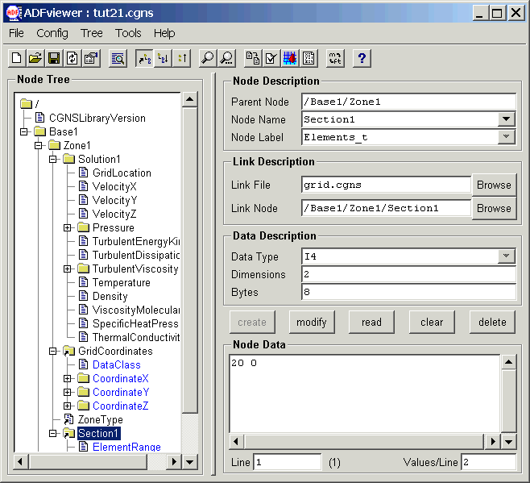

(CGNS Documentation Home Page)
(Steering Committee Charter)
(Overview and Entry-Level Document)
(A User's Guide to CGNS)
(Standard Interface Data Structures)
(SIDS-to-ADF File Mapping Manual)
(SIDS-to-HDF File Mapping Manual)
(Mid-Level Library)
(ADF User's Guide)
(CGNS Tools and Utilities)
(CGNS Documentation Home Page)
(Steering Committee Charter)
(Overview and Entry-Level Document)
(A User's Guide to CGNS)
(Standard Interface Data Structures)
(SIDS-to-ADF File Mapping Manual)
(SIDS-to-HDF File Mapping Manual)
(Mid-Level Library)
(ADF User's Guide)
(CGNS Tools and Utilities)
(ADFviewer)
(CGNSplot)
(Utilities)
ADFviewer
The ADFviewer program provides a graphical user interface to
view and edit ADF or CGNS files. The current documentation is
brief in nature, but hopefully adequate for most needs.
You may click on the image below to jump to a topic, or select
from the following links.
